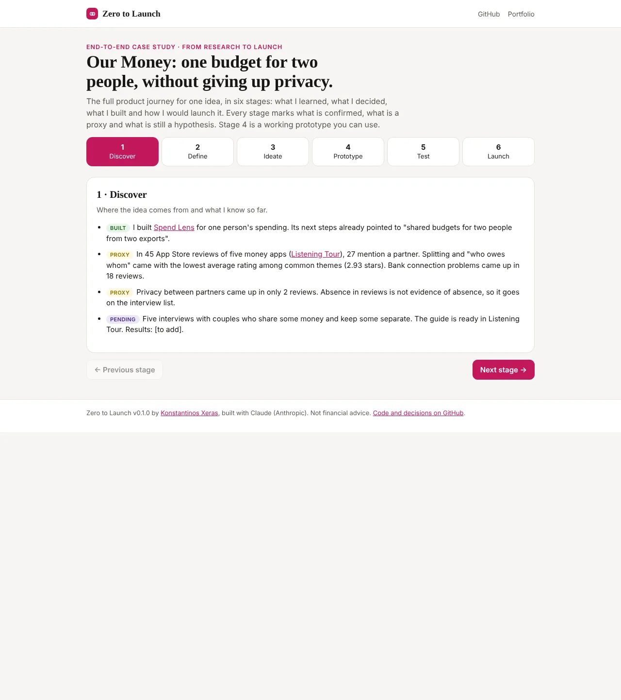

The problem
Couples who share some money and keep some personal have no single view of shared spending across two banks, and split apps turn a partner into a debtor.

What it does
- Six stages with evidence labels.
- Options and riskiest assumptions.
- Prototype with a fair-share rule, settle-up and private personal spending.
- Test and launch plans with placeholders.
Findings and decisions
Product call
A fair-share rule instead of a running debt
Splitting had the lowest ratings in the review proxy, so the prototype shows each partner against an agreed rule, phrased without blame.
Product call
Launch inside Spend Lens
It reuses private import and categories, and the partner invite becomes the growth loop.
What I would do next
- Run the interviews.
- Two-week prototype test with five couples.
- Encrypted export and import between partners.